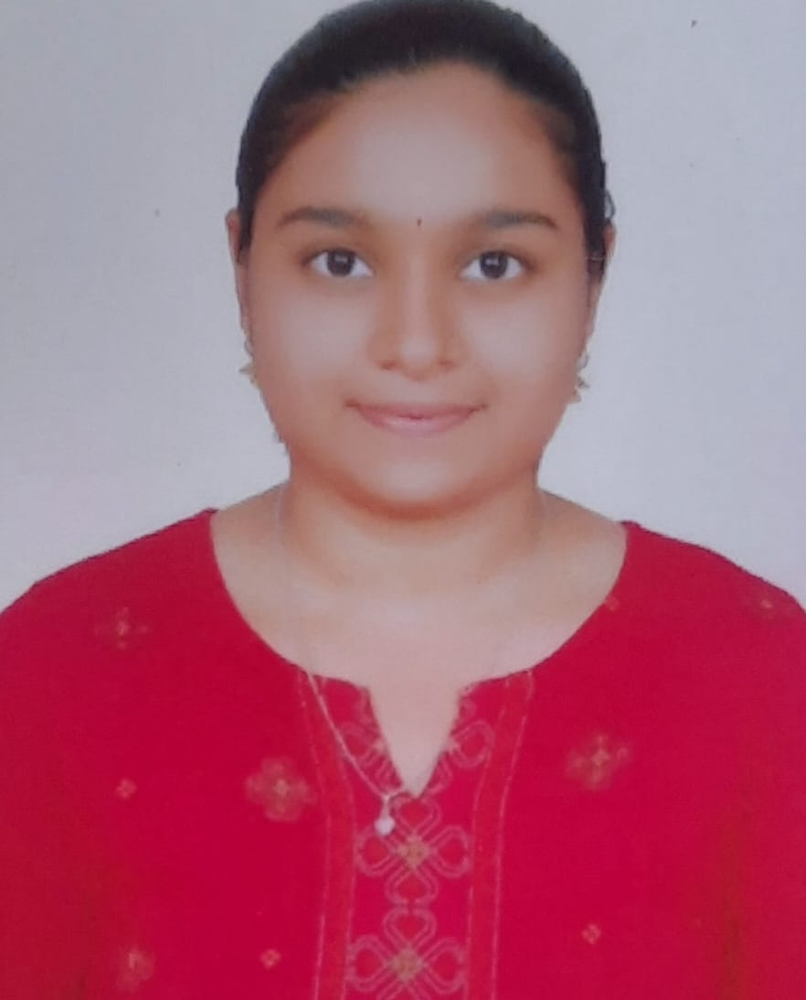

My name is Yashodha B T. I am currently pursuing my degree in Electronics and Communication. I am a motivated and enthusiastic fresher who is passionate about learning web development and improving technical skills. I am hardworking, disciplined, and eager to grow professionally.
Email: yashoda2004729@email.com
Phone: 8792105530
LinkedIn:
Visit My LinkedIn Profile